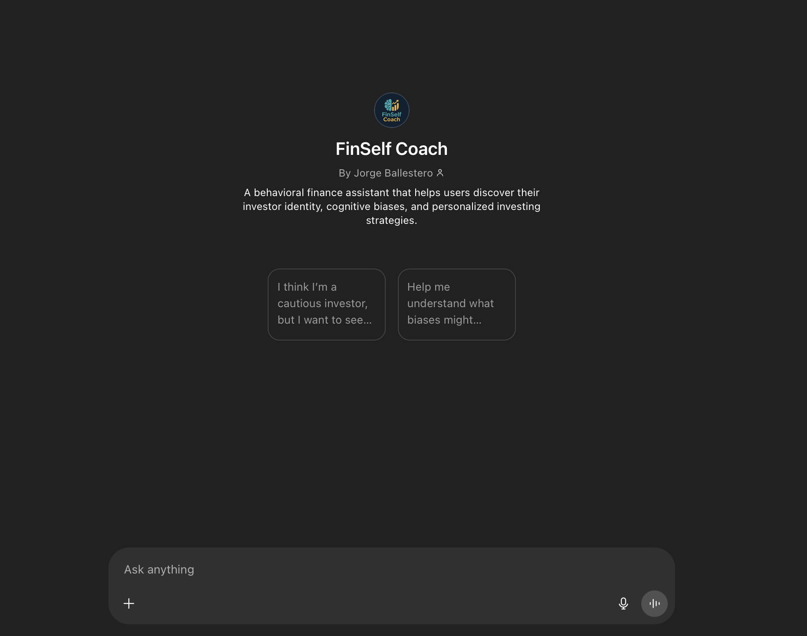

Behavioral Finance GPT Assistant
Conversational Tool • Behavioral Design & Financial Analytics • 2025
This GPT-powered assistant helps investors navigate financial decisions by surfacing hidden biases, personality tendencies, and contextual blind spots.
Grounded in behavioral finance and psychology, the tool maps users to 15+ bias archetypes, combining personalized nudges, cognitive safeguards, and empowering re-frames to help users act more intentionally with their money.
Users begin by answering structured identity and bias-revealing questions. From these inputs, the assistant builds a dual-profile: how users perceive their investment identity and which behavioral pitfalls they are statistically prone to—such as present bias, regret aversion, or overconfidence.
The assistant then generates personalized portfolio strategies using both heuristic-based coaching and data pulled from live market sources. A separate stock analysis module lets users input tickers and receive behaviorally filtered return graphs, adjusted for their cognitive tendencies. For instance, a risk-averse user might see stress-tested timelines, while a regret-prone user gets scenario-based comparisons.
This project explores how behavioral insights can be embedded in real-time advisory systems. It bridges diagnostic frameworks (like Kahneman’s bias taxonomy) with practical forecasting, enabling reflective investing through conversation.

Try the Assistant
View GitHub Code
← Back to Portfolio